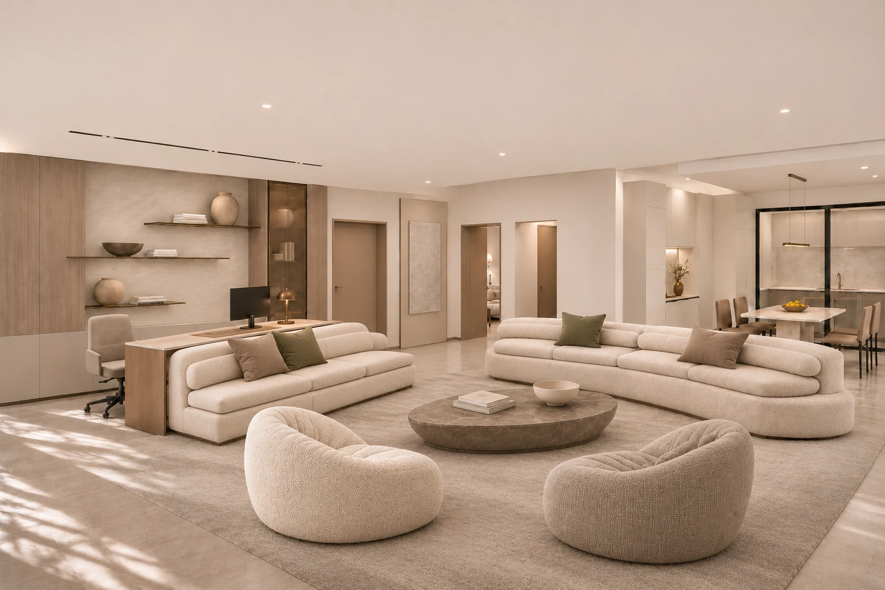
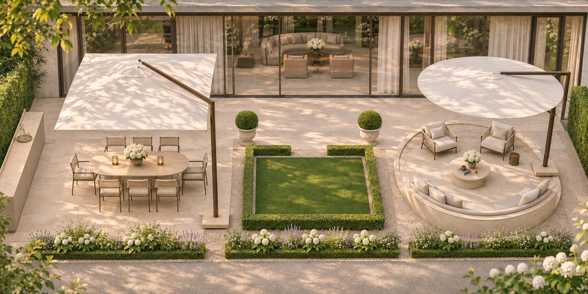
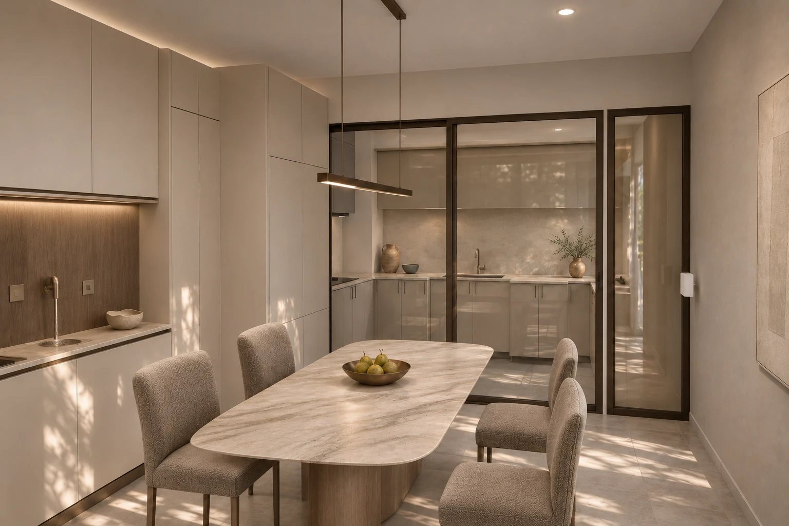
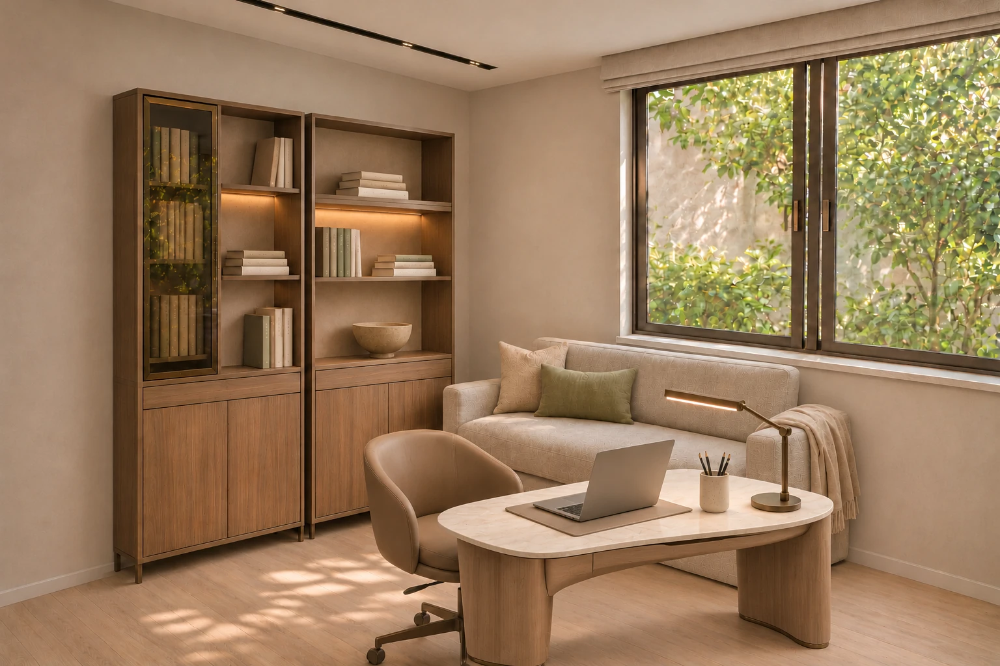
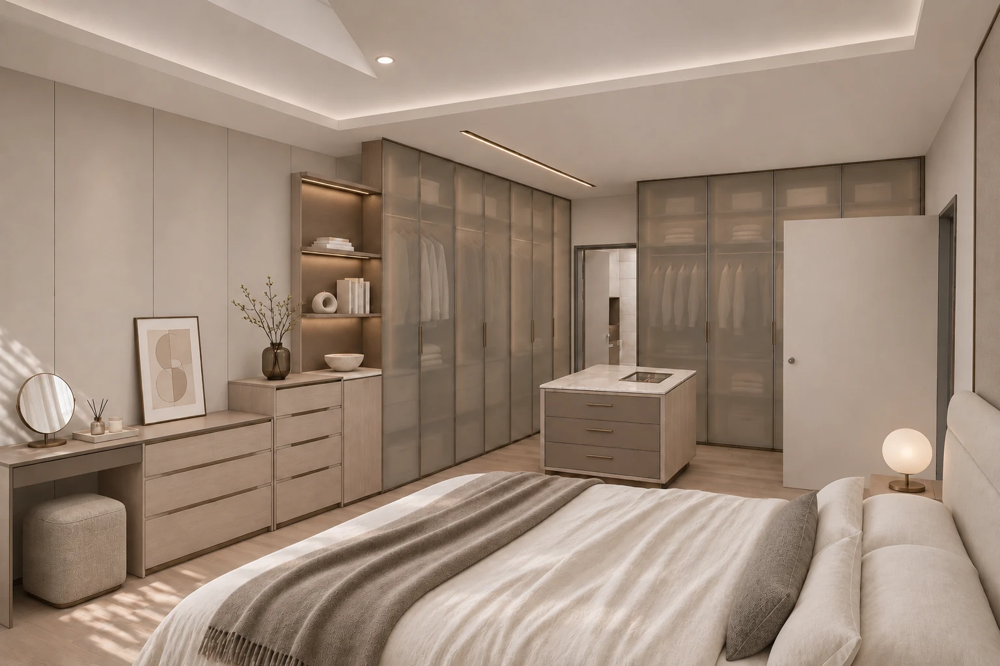
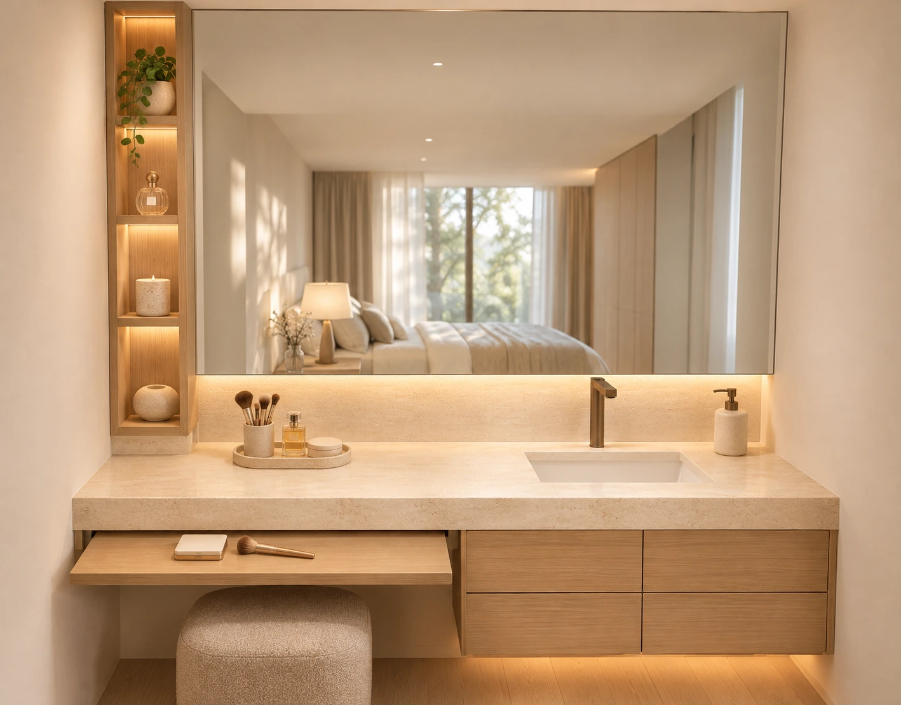
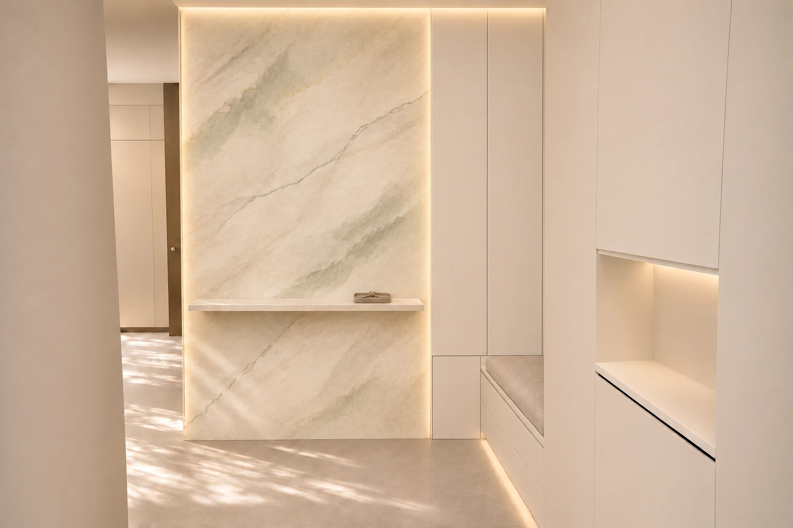
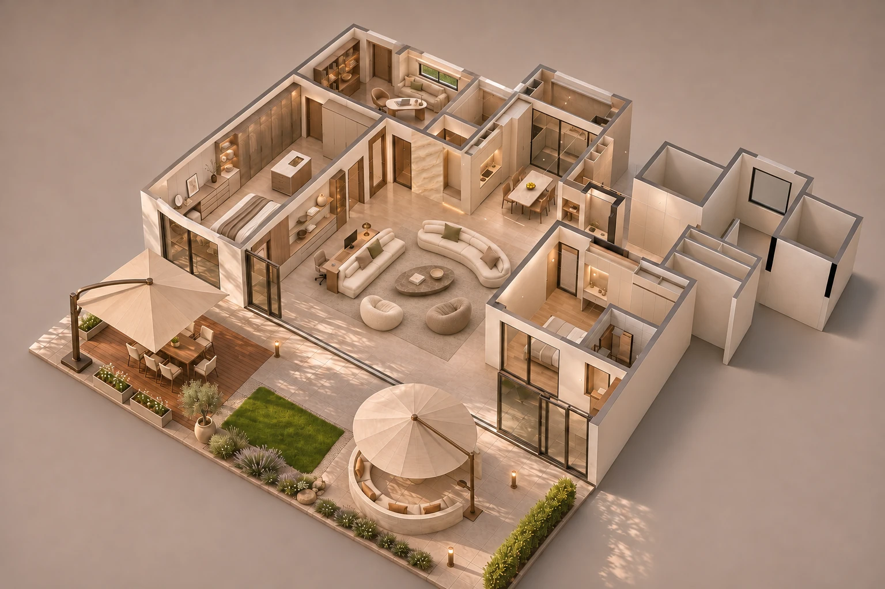
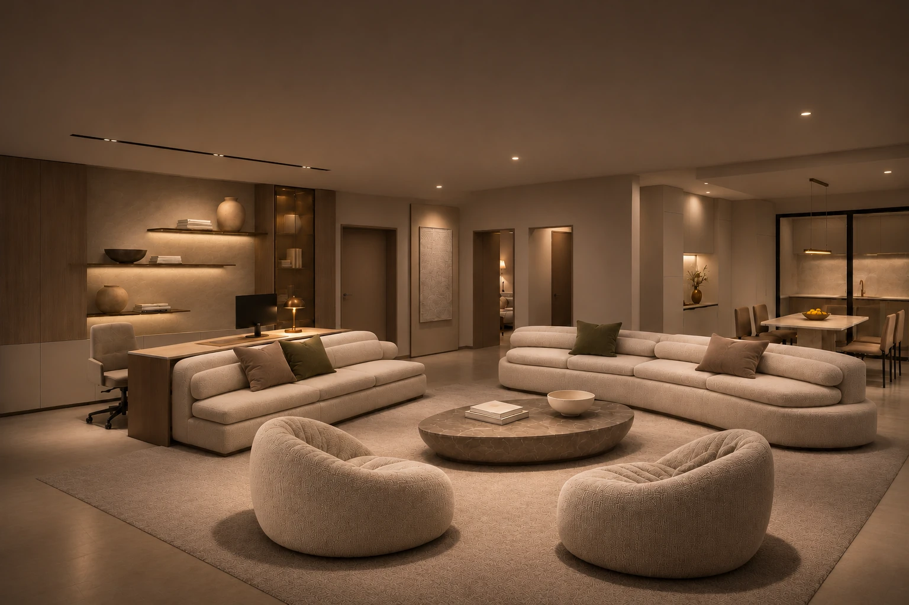

浅暖石材、灰棕木与米色织物，呈现各空间的材质与生活氛围。


浅暖石材、白绿花境、双悬臂伞与西侧连续操作台。
奶油色沙发与懒人单椅，搭配浅石、灰棕木和柔和织物。
独立石台面书桌与沙发相接，背后以木饰面和展示书柜衬托。

圆角石材餐桌、独立餐椅和暖灰米色柜体。

圆角浅石桌、温润木脚、模块书柜与沙发床。

半透玻璃衣柜、衣帽中岛与床尾高低收纳组合。

整面镜、通长浅石台、灯光木格与悬空木抽屉。

奢石右侧改同色隐藏浅柜，上部帽包雨伞收纳、低位拖鞋柜；柜门避让直段换鞋凳。
灰米色柜面、浅石台面和简洁的窗下洗漱备餐区。

从整体理解全屋材质、家具氛围和室内外关系。

局部暖光衬托家具轮廓与不同材质的层次。